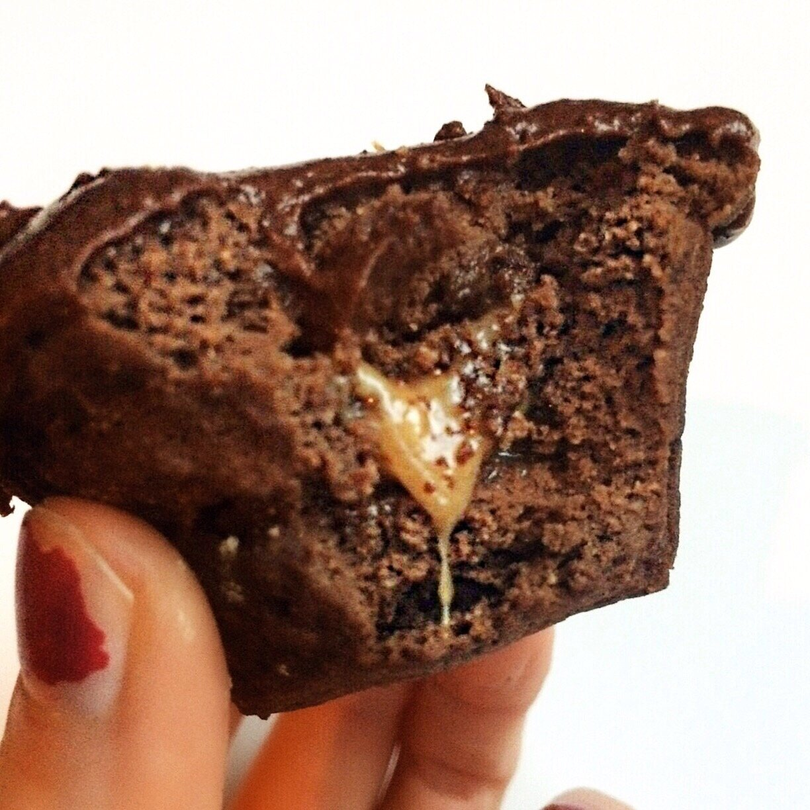
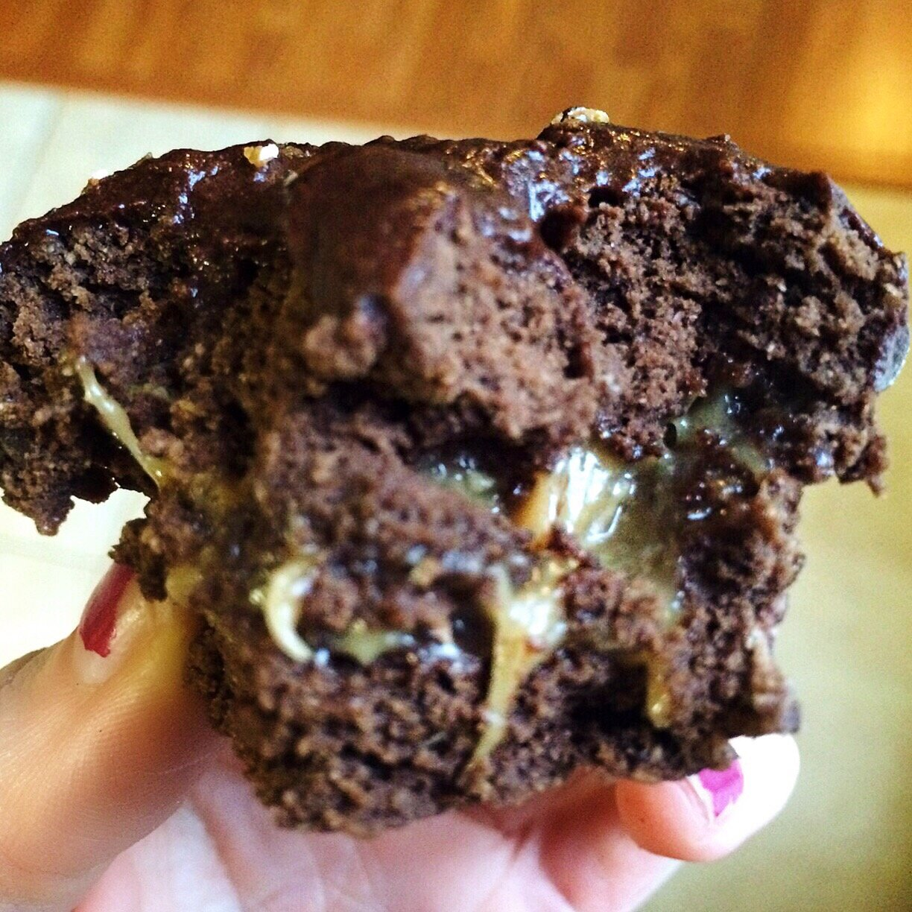

1 Minute Caramel Filled Chocolate Cupcake (vegan, gluten free)


Delicious cupcake all for you in just one minute?! Yes! This 1 minute caramel filled chocolate cupcake is fluffy, simple, and contains no butter, eggs, or dairy. It is completely vegan, gluten free, and low in sugar! When I'm pinched for time and want to eat a snack or dessert quickly without pulling out every pantry ingredient and every measuring utensil, I love making a 1 minute cupcake! It's so quick and still comes out with a perfect consistency. These are also rather versatile, allowing for all sorts of flavor varieties, icings, fillings, you name it! They are only limited by your imagination! I've done lemon pistachio, cinnamon bun, chocolate raspberry, and more. What flavor would you make first?!
I think what makes this one of my favorite flavors to date is the caramel filling. I mean, look at it! I've been using this caramel for a lot of recipes lately, and it's the simplest thing. It bakes perfectly and is just pretty in general. Mix equal parts brown rice syrup and any nut butter (peanut butter works best), and ta-da! Caramel! Thick and irresistible.
Not only is this cupcake quick and fluffy (and I mean reeeal fluffy and light), but it is completely vegan, gluten free, and low in sugar! Without the brown rice syrup, it's actually sugar free. If you are avoiding sugar entirely, you can use IMO fiber syrup instead for a completely sugar free alternative. This is a great healthy option without hassle - almost too good to be true.
Try this 1 minute caramel filled chocolate cupcake recipe and let me know if you try any other flavor varieties!
1 Minute Caramel Filled Chocolate Cupcake
Makes: 1 cupcake
Cake Batter
-
1/2 TBSP coconut flour
-
1/2 TBSP buckwheat flour
-
1/2 TBSP ground flax seeds
-
1/2 TBSP plant-based protein powder
-
1/2 TBSP unsweetened cocoa powder
-
1/4 tsp baking powder
-
1 stevia packet
-
1/4 cup water
Caramel Filling
-
1/2 TBSP brown rice syrup
-
1/2 TBSP peanut butter
-
Mix all of the cake batter ingredients.* Pour the mix in a silicon cupcake mold and microwave for 1 minute.
-
Make a caramel by mixing brown rice syrup and peanut butter.
-
Cut out a small hole from the top of the cupcake and set to the side. Add your filling inside the opening. Seal the caramel filling by covering with the top of the cupcake you original cut out.
-
Add any icing you prefer,** and enjoy!
*If you do not have a 1/2 TBSP measuring tool, you can easily double each ingredient, use a tablespoon, and have two cupcakes instead of one, woohoo! I personally like to make 2 at once. Or, 1/2 TBSP = 1.5 tsp
**For my icing, I mixed Nuzest protein powder, unsweetened cocoa, and IMO fiber syrup for a sweet, thick consistency.